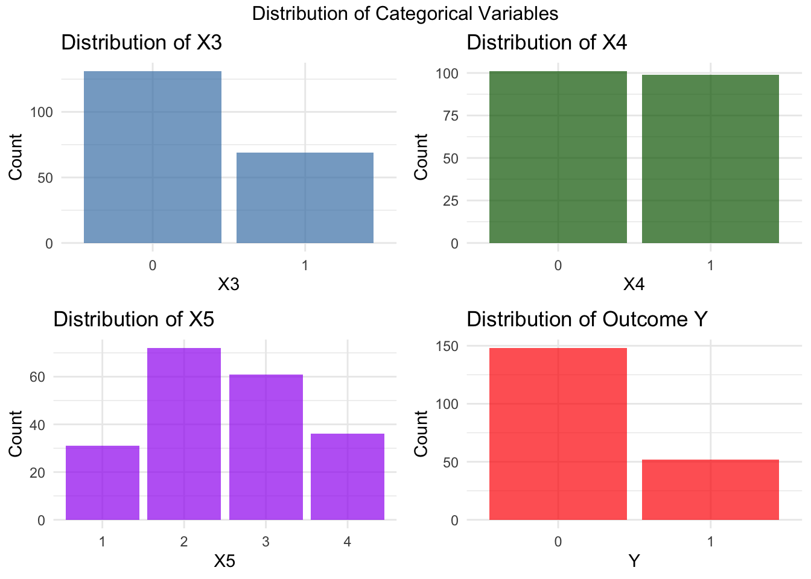
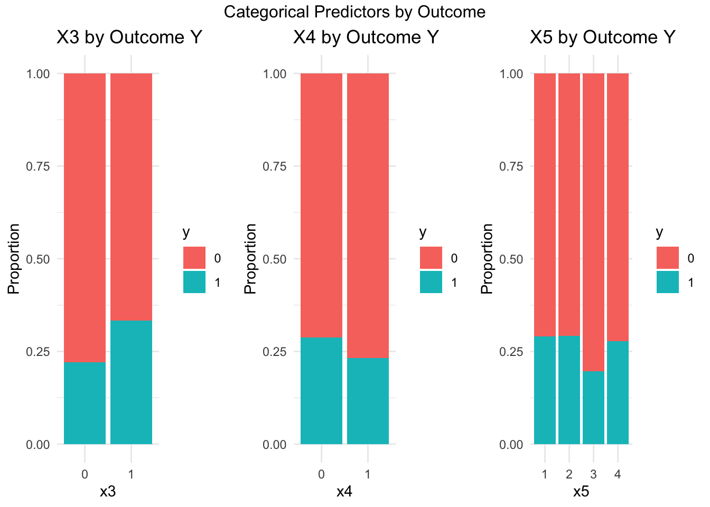

library(ggplot2)
library(dplyr)
library(corrplot)
library(gridExtra)
library(correlation)Part 1.1 Data Preparation and Exploration (Binary Outcomes)
The foundation of any prediction model is understanding and preparing your data. This lesson focuses on cleaning, exploring, and structuring the dataset — particularly when the outcome is binary (e.g., disease: yes/no).
1. Expected Background Knowledge
- Basic R programming
- Basic statistics (means, proportions, distribution)
- Familiarity with binary outcomes
2. Learning Objectives
- Understand the structure and content of the dataset
- Identify and handle missing data
- Prepare variables for modeling (e.g., correct formats, imputation)
3. Key Sections
In this part, you will learn about :
- Introduction to the problem
- Data Simulation
- Descriptive statistics & Exploratory data analysis (EDA)
- Handling missing data
- Visualizations
1. Summary
Clinical prediction models aim to forecast future health outcomes given a set of baseline predictors to facilitate medical decision making and improve people’s health outcomes.
Ideally, prediction models are developed using individual participant data from prospective cohort studies designed for this purpose.
We generated a realistic dataset of 200 patients with 10 predictor variables of mixed types (continuous, binary, and categorical) that exhibit complex relationships including quadratic effects and interactions, representative of real clinical data where variables like age, biomarkers, and treatment indicators are often correlated.
Missing values were introduced randomly across approximately 10% of the data points, mimicking the incomplete data patterns frequently encountered in medical studies due to patient dropout, measurement failures, or administrative issues.
The dataset also includes a clustering structure representing different clinical sites or treatment groups, and a binary outcome variable generated through a logistic regression model with known coefficients.
2. Preparation
After opening the R-Studio, we need to load some of the libraries that will be used.
The Dataset has been available with 200 rows of patient data that contains 5 predictors.
df = readRDS('dataset.rds')
head(df) x1 x2 x3 x4 x5 y
1 -0.2920649 -0.03894024 0 0 3 0
2 0.2585203 -1.10383191 0 0 3 0
3 -0.3255838 0.02113777 1 1 3 0
4 0.7591404 1.20456294 1 0 1 0
5 -0.7619825 0.99184146 1 1 3 0
6 0.3543335 0.74232912 0 0 3 0The dataset included :
- Five predictors x1, x2, x3, x4, x5, of which x1, x2 are continuous, x3, x4 binary, and x5 categorical.
- The outcome y is binary variable ( 0 and 1)
3. Descriptive Statistics and Visualizations
Before we build any predictive model, it is crucial to thoroughly explore and understand the dataset. This section will guide you through essential descriptive statistics and visualizations to better comprehend the structure, distribution, and relationships within the data.
3.1 Descriptive Summary
Begin by inspecting the structure of the dataset and summarizing its variables using the summary() function.
summary(df) x1 x2 x3 x4 x5 y
Min. :-2.72626 Min. :-3.58266 0:131 0:101 1:31 0:148
1st Qu.:-0.59029 1st Qu.:-0.59374 1: 69 1: 99 2:72 1: 52
Median : 0.06844 Median : 0.05397 3:61
Mean : 0.06697 Mean : 0.06396 4:36
3rd Qu.: 0.73247 3rd Qu.: 0.69973
Max. : 2.96170 Max. : 2.31576 Here are the insight breakdown of each variables :
| Insight | Explanation |
|---|---|
x1 and x2 have medians and means close to 0 ( Indicate Normal Distributions) |
The min and max suggest no extreme outliers on both variables |
x3 is slightly imbalanced |
Has two levels and majority is level 0 :
|
x4 is balanced |
Almost perfectly balanced between each class,
|
x5 has moderate imbalance |
Level 2 has the most frequent observations, and level 1 is the least. |
y (response variable)is imbalanced |
The response variable has two classes (binary) : 0 : 148 observations (74%) |
3.2 Missing Values
Check for any missing values in the dataset, which could impact model performance if not handled properly. Use is.na() and colSums() or summary() to identify missing data.
colSums(is.na(df))x1 x2 x3 x4 x5 y
0 0 0 0 0 0 This means:
- Every variable (
x1tox5, andy) is fully observed. - No imputation, removal, or special treatment for missing data is needed during preprocessing.
- We can proceed directly to data exploration, visualization, and modeling without concern for NA handling.
3.3 Distribution of Numeric Variables
Visualize the distribution of numeric variables using histograms to understand their shapes, spread, and central tendencies.
p1 <- ggplot(df, aes(x = x1)) +
geom_histogram(bins = 20, fill = "skyblue", alpha = 0.7, color = "black") +
labs(title = "Distribution of X1", x = "X1", y = "Frequency") + theme_minimal()
p2 <- ggplot(df, aes(x = x2)) +
geom_histogram(bins = 20, fill = "lightgreen", alpha = 0.7, color = "black") +
labs(title = "Distribution of X2", x = "X2", y = "Frequency") + theme_minimal()
# Combine plots
grid.arrange(p1, p2, ncol = 2, top = "Distribution of Continuous Variables")
- Both
x1andx2have means and medians close to zero, and the data ranged from -3 to 3, the typical numerical data that follows Normal Distribution - Since the mean ≈ median for both, there’s no strong skew (neither left nor right). In addition, based on the plot there is no extreme values that considered outliers.
- Since both of them has normal distributions, there is no need to apply transformations before going into modelling.
3.4 Distribution of Categorical Variables
Explore the frequency distribution of categorical variables (x3,x4,x5 and y) using bar plots.
p5 <- ggplot(df, aes(x = x3)) +
geom_bar(fill = "steelblue", alpha = 0.7) +
labs(title = "Distribution of X3", x = "X3", y = "Count") + theme_minimal()
p6 <- ggplot(df, aes(x = x4)) +
geom_bar(fill = "darkgreen", alpha = 0.7) +
labs(title = "Distribution of X4", x = "X4", y = "Count") + theme_minimal()
p7 <- ggplot(df, aes(x = x5)) +
geom_bar(fill = "purple", alpha = 0.7) +
labs(title = "Distribution of X5", x = "X5", y = "Count") + theme_minimal()
p8 <- ggplot(df, aes(x = y)) +
geom_bar(fill = "red", alpha = 0.7) +
labs(title = "Distribution of Outcome Y", x = "Y", y = "Count") + theme_minimal()
grid.arrange(p5, p6, p7, p8, ncol = 2, top = "Distribution of Categorical Variables")
Based on the plot above, here are some key insights :
| Variable | Balanced? | Sparse Levels? | Modelling Challanges |
|---|---|---|---|
x3 |
Slightly imbalanced | No | Minor |
x4 |
Yes | No | None |
x5 |
No | Yes (1, 4) |
Minor |
y |
No (imbalanced) | N/A | Needs special handling |
3.5 Correlation
Analyze pairwise correlations to understand the linear relationships between variables. Use correlation coefficients (Pearson, Spearman, or Cramér’s V for categorical) and visualize them.
cor_result = rcompanion::correlation(df)
cor_result Var1 Var2 Type N Measure Statistic Lower.CL Upper.CL
1 x1 x2 Numeric x Numeric 200 Pearson 0.486 0.372 0.585
2 x1 x3 Numeric x Binary 200 Pearson 0.168 0.030 0.300
3 x1 x4 Numeric x Binary 200 Pearson -0.002 -0.141 0.137
4 x1 x5 Numeric x Nominal 200 Eta 0.046 0.000 0.122
5 x1 y Numeric x Binary 200 Pearson 0.482 0.368 0.582
6 x2 x3 Numeric x Binary 200 Pearson 0.419 0.298 0.527
7 x2 x4 Numeric x Binary 200 Pearson 0.095 -0.044 0.231
8 x2 x5 Numeric x Nominal 200 Eta 0.081 0.000 0.170
9 x2 y Numeric x Binary 200 Pearson 0.274 0.140 0.397
10 x3 x4 Binary x Binary 200 Phi 0.228 NA NA
11 x3 x5 Binary x Nominal 200 Cramer 0.168 NA NA
12 x3 y Binary x Binary 200 Phi 0.121 NA NA
13 x4 x5 Binary x Nominal 200 Cramer 0.333 NA NA
14 x4 y Binary x Binary 200 Phi -0.062 NA NA
15 x5 y Nominal x Binary 200 Cramer 0.096 NA NA
Test p.value Signif
1 cor.test 0.0000 ****
2 cor.test 0.0171 *
3 cor.test 0.9789 n.s.
4 Anova 0.9353 n.s.
5 cor.test 0.0000 ****
6 cor.test 0.0000 ****
7 cor.test 0.1798 n.s.
8 Anova 0.7291 n.s.
9 cor.test 0.0001 ****
10 chisq.test 0.0013 **
11 chisq.test 0.1297 n.s.
12 chisq.test 0.0862 n.s.
13 chisq.test 0.0001 ****
14 chisq.test 0.3770 n.s.
15 chisq.test 0.6037 n.s.The correlation Plot :
plot(cor_result)
Based on the summary and the plot above, there are some insights that will be useful for modelling :
🔸 Significance Legend:
****= p < 0.0001 → highly significant**= p < 0.01 → very significant*= p < 0.05 → significantn.s.= not significant
There are some variables that has significant correlations between each other :
| Pair | Correlation | Strength | Significance | Notes |
|---|---|---|---|---|
x1 ~ x2 |
0.486 | Moderate | **** | Moderate positive linear relationship |
x1 ~ y |
0.482 | Moderate | **** | x1 is moderately predictive of the outcome |
x2 ~ y |
0.274 | Weak-to-moderate | **** | Some predictive power, less than x1 |
x1 ~ x3 |
0.168 | Weak | * | Weak positive correlation |
x2 ~ x3 |
0.419 | Moderate | **** | x2 and x3 have moderate relationship |
x4 ~ x5 |
0.333 | Moderate | **** | Strongest categorical relationship in data |
x3 ~ x4 |
0.228 | Weak-to-moderate | ** | Some association between x3 and x4 |
3.6 Relationship between Predictors and Response Variables
Explore how the predictor variables relate to the response variable. This can reveal early signs of predictive power and potential modeling strategies.
3.6.1 Numerical Predictors vs Response Variables
Use boxplots to assess the relationship between continuous predictors and the response variable.
p10 <- ggplot(df, aes(x = y, y = x1, fill = y)) +
geom_boxplot(alpha = 0.7) +
labs(title = "X1 by Outcome Y", x = "Y", y = "X1") + theme_minimal() +
theme(legend.position = "none")
p11 <- ggplot(df, aes(x = y, y = x2, fill = y)) +
geom_boxplot(alpha = 0.7) +
labs(title = "X2 by Outcome Y", x = "Y", y = "X2") + theme_minimal()
grid.arrange(p10, p11, ncol = 2, top = "Continuous Predictors by Outcome")
Here are some key takeaways from the plot :
For X1 and Y :
- Median of
x1is higher fory = 1compared toy = 0. - Individuals with higher
x1values are more likely to havey = 1(Indicate that there is moderate relationship between x1 and y, confirmed by the correlation value (0.482) with very high significance).
For X2 and Y :
- Median of
x2fory = 1is also higher than fory = 0 - The trend is upward, indicating that
x2may be somewhat predictive ofy, confirmed by the positive correlation value (0.274) with high significance
3.6.2 Categorical Predictors vs Response Variables
Use grouped bar plots to explore how categorical predictors influence the response.
p12 <- ggplot(df, aes_string(x = "x3", fill = "factor(y)")) +
geom_bar(position = "fill") + # stacked proportion bars
ylab("Proportion") +
labs(fill = "y", title = paste("X3 by Outcome Y")) + theme_minimal()Warning: `aes_string()` was deprecated in ggplot2 3.0.0.
ℹ Please use tidy evaluation idioms with `aes()`.
ℹ See also `vignette("ggplot2-in-packages")` for more information.p13 <- ggplot(df, aes_string(x = "x4", fill = "factor(y)")) +
geom_bar(position = "fill") + # stacked proportion bars
ylab("Proportion") +
labs(fill = "y", title = paste("X4 by Outcome Y")) + theme_minimal()
p14 <- ggplot(df, aes_string(x = "x5", fill = "factor(y)")) +
geom_bar(position = "fill") + # stacked proportion bars
ylab("Proportion") +
labs(fill = "y", title = paste("X5 by Outcome Y")) + theme_minimal()
grid.arrange(p12, p13, p14, ncol = 3, top = "Categorical Predictors by Outcome")
From the bar plots titled “Categorical Predictors by Outcome”, we can analyze how the response variable y (0 or 1) is distributed across levels of the categorical predictors: x3, x4, and x5.
- in every variables, majority of cases have
y = 0(orange) with smaller proportion ofy = 1(blue) - All the categorical variables have low correlations with the y. Thus, there is no categorical variables that has significant relationship with Y, indicated by high p-values and low correlation. That’s why no clear or strong association captured by the graph.
4. Conclusion
From the exploratory analysis, we found that the numeric predictors x1 and x2 show meaningful relationships with the outcome y, with x1 being the strongest predictor, as supported by both correlation coefficients and clear separation in boxplots. In contrast, the categorical variables x3, x4, and x5 show weak or no significant associations with the outcome, with only x3 displaying a mild visual trend that is not statistically significant. Additionally, all variables are complete with no missing values, and the data appears standardized. Overall, x1 and x2 are likely the most valuable predictors for modeling y, while the categorical variables may contribute little to model performance.